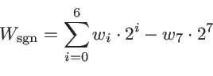

Wstecz: 5.4 Tablice znaków (C-napisy) W górę: 5. Tablice statyczne i wskaźniki Dalej: 5.6 Tablice typu std::array
Tablice w C/C++ mogą być wielowymiarowe, choć ich implementacja nie jest tak efektywna jak w innych językach programowania (w szczególności Fortranie). W zasadzie tablica n-wymiarowa jest jednowymiarową tablicą wskaźników do tablic (n - 1)-wymiarowych,..., i tak dalej, rekursywnie. Implementacja takich tablic jest nieco inna dla napisów i dla danych innych typów. Jako przykład tablic tego drugiego rodzaju rozpatrzymy macierze liczbowe; tablice napisów przedstawimy w podrozdziale następnym. Pamiętajmy, że w tym rozdziale mówimy tylko o tablicach statycznych, a więc takich które tworzone są jako zmienne lokalne (na stosie) i ich wymiar jest znany na etapie kompilacji.
Rozpatrzmy następującą deklarację/definicję dwuwymiarowej tablicy:
int tab[2][4] = { {1,2,3}, {5,6,7,8} };
Zadeklarowaliśmy tu tablicę dwuwymiarową (macierz)
o dwóch „wierszach” i czterech „kolumnach”. Umawiamy się bowiem,
że pierwszy indeks numeruje wiersze, a drugi kolumny
(jest to oczywiście konwencja, w pamięci komputera struktura
tych danych i tak będzie liniowa).
Liczba elementów naszej tablicy będzie 8. Znaną nam techniką od razu inicjujemy utworzoną tablicę (dwoma tablicami opowiadającymi wierszom tworzonej macierzy). Aby to prawidłowo zrobić, musimy pamiętać o kolejności, w jakiej ułożone są elementy tablicy w pamięci komputera. W C/C++ zapis danych macierzy następuje wierszami (a nie kolumnami, jak na przykład w Fortranie) a więc najpierw kolejne elementy wiersza o indeksie 0:
tab[0][0] tab[0][1] tab[0][2] tab[0][3]
potem elementy wiersza o indeksie 1
tab[1][0] tab[1][1] tab[1][2] tab[1][3]
Inicjując tablicę ujmujemy poszczególne wiersze
w nawiasy klamrowe: tu było to konieczne, gdyż w pierwszym z nich
nie podaliśmy wszystkich
czterech wartości, a tylko trzy. Ostatni element pierwszego wiersza,
czyli element
tab[0][3], zostanie zainicjowany zerem.
Gdybyśmy nie zostawili żadnych „dziur” i podali wszystkie wartości,
to nawiasów klamrowych do zaznaczenia poszczególnych wierszy zwykle
nie musimy podawać
int tab[2][4] = { 1,2,3,4,5,6,7,8 };
choć nie jest to zbyt czytelne. Lepiej więc
zawsze ujmować nawet „pełne” wiersze w nawiasy klamrowe; ma to tę
dodatkową zaletę, że oddaje prawdziwą naturę takiej tablicy jako
tablicy tablic.
Do elementów tablicy dwuwymiarowej odwołujemy się poprzez nazwę tablicy z dwoma indeksami, każdy w osobnej parze nawiasów kwadratowych — np. tab[1][2] ma w naszym przykładzie wartość 7; indeksowanie jest od zera.
Załóżmy, że zadeklarowaliśmy tablicę dwuwymiarową o dim1 wierszach i dim2 kolumnach
constexpr int dim1 = ...;
constexpr int dim2 = ...;
int tab[dim1][dim2];
Wiemy, że elementy rozmieszczone są w pamięci wierszami.
Jak, mając adres początku tablicy i dwa indeksy
m
i
n, znaleźć
odpowiadający tym indeksom element
tab[m][n]?
Szukany element jest w wierszu (m + 1)-szym (o indeksie
m),
a więc, licząc od początku tablicy, musimy najpierw
„przeskoczyć” m wierszy, każdy o długości
dim2,
czyli
m⋅dim2 elementów. Następnie musimy
„przeskoczyć”
n
elementów tego wiersza, w którym
znajduje się szukany element (który ma indeks kolumnowy
n,
czyli jest w tym wierszu (n + 1)-szym elementem). Zatem przesunięcie
elementu
tab[m][n]
względem elementu
tab[0][0]
wynosi

Co jest tu ważne, to fakt, że do obliczenia tego przesunięcia nie jest potrzebna znajomość pierwszego wymiaru tablicy, czyli liczby wierszy dim1. Ogólnie, dla tablic wielowymiarowych, do prawidłowego obliczenia przesunięcia elementu względem początku tablicy potrzebna jest znajomość wszystkich wymiarów prócz pierwszego. Rozpatrzmy przykład 1. #include <iostream>
2. using namespace std;
3.
4. void zamien(int tab[][4], int w1, int w2) {
5. int t,k;
6. for (k = 0; k < 4; k++) {
7. t = tab[w1][k];
8. tab[w1][k] = tab[w2][k];
9. tab[w2][k] = t;
10. }
11. }
12.
13. void printTable(int tab[][4], int dim1) { ➊
14. int w,k;
15. for (w = 0; w < dim1; w++) {
16. for (k = 0; k < 4; k++)
17. cout << tab[w][k] << " ";
18. cout << endl;
19. }
20. }
21.
22. int main() {
23. int tab[3][4] = { {1,2,3,4}, {5,6}, {1} };
24.
25. cout << "Tablica przed:\n"; printTable(tab,3);
26. zamien(tab,0,1);
27. cout << "Tablica po:\n"; printTable(tab,3);
28. }
Wynik tego programu to
Tablica przed:
1 2 3 4
5 6 0 0
1 0 0 0
Tablica po:
5 6 0 0
1 2 3 4
1 0 0 0
W programie głównym deklarujemy/definiujemy tablicę dwuwymiarową
o wymiarach 3×4. W części inicjującej
używamy nawiasów dla każdego wiersza, gdyż inicjujemy tylko
niektóre elementy poszczególnych wierszy — pozostałe, jak widać
z wydruku, są automatycznie inicjowane zerami.
Funkcja zamien zamienia dwa wiersze o podanych indeksach. Indeksy tych wierszy są podane jako dwa ostatnie parametry funkcji. Pierwszym parametrem funkcji jest natomiast tablica dwuwymiarowa: zauważmy, że typ parametru został określony jako int[][4] — informacja o drugim wymiarze musi być podana. Informacja o wymiarze pierwszym jest niepotrzebna do prawidłowego określenia typu i, nawet jeśli ją podamy, zostanie zignorowana. Zauważmy, że informacji o pierwszym wymiarze w ogóle nie przesyłamy do funkcji zamien. Przesyłamy ją natomiast do funkcji printTable, gdyż tam będzie potrzebna do wydrukowania całej tablicy: pierwszy wymiar przesyłamy jednak nie jako część typu tablicy, ale jako dodatkowy argument funkcji (parametr dim1 — linia ➊).
Zastanówmy się, czym, z punktu widzenia związku między tablicami a wskaźnikami, jest zmienna tab po następującej deklaracji/definicji:
int tab[dim1][dim2];Mówiliśmy już w rozdziale o arytmetyce wskaźników , że tab[i] jest równoważne *(tab+i). Na tej samej zasadzie tab[i][j], które ma wartość typu int, to to samo co *(tab[i]+j). Zatem tab[i] musi być typu int*. To jest logiczne: tab[i] wskazuje na początek wiersza o indeksie i. Ale tab[i] to *(tab+i) i wyłuskana wartość ma być typu int*, a więc tab musi być typu „wskaźnik do wskaźnika do int”. Zatem taki typ tablicowy odpowiada typowi int**. Odpowiada, ale nie jest z nim tożsamy!
W funkcjach printTable i zamien musieliśmy jawnie specyfikować drugi wymiar tablicy. A więc funkcje te mogą być zastosowane tylko do takich tablic. Gdybyśmy chcieli zamieniać wiersze w macierzach o innej liczbie kolumn, musielibyśmy napisać do tego osobną funkcję. Jak zatem napisać funkcję bardziej ogólną?
Rozwiązaniem może być zastąpienie macierzy jednowymiarową tablicą wskaźników do poszczególnych wierszy, które są jednowymiarowymi tablicami liczb. Dla tablic jednowymiarowych mamy standardową konwersję do typu wskaźnikowego.
Powyższy program można więc zastąpić takim:
1. #include <iostream>
2. using namespace std;
3.
4. void zamien(int* tab[],int w1,int w2,int dim1,int dim2) {
5. for (int k = 0; k < dim2; k++) {
6. int t = tab[w1][k];
7. tab[w1][k] = tab[w2][k];
8. tab[w2][k] = t;
9. }
10. }
11.
12. void printTable(int* tab[], int dim1, int dim2) {
13. for (int w = 0; w < dim1; w++) {
14. for (int k = 0; k < dim2; k++)
15. cout << tab[w][k] << " ";
16. cout << endl;
17. }
18. }
19.
20. int main() {
21. int tt[3][4] = { {1,2,3,4}, {7,6}, {1} }; ➊
22.
23. const int dim1 = 3;
24. const int dim2 = 4;
25.
26. int* tab[dim1]; ➋
27. for (int i = 0; i < dim1; i++)
28. tab[i] = tt[i];
29.
30. cout << "Przed:\n"; printTable(tab,dim1,dim2);
31. zamien(tab,0,1,dim1,dim2);
32. cout << "Po:\n"; printTable(tab,dim1,dim2);
33. }
Zauważmy, że teraz typem pierwszego parametru funkcji zamien jest tablica wskaźników typu int*. Nie ma tu wyspecyfikowanego raz na zawsze żadnego wymiaru. Aktualne wymiary tablicy przesyłamy osobno poprzez argumenty dim1 i dim2. Zatem funkcję tę można stosować do wszelkich tablic dwuwymiarowych, o dowolnym pierwszym i drugim wymiarze.
Tyle tylko, że co innego trzeba do funkcji „wysłać”. W linii ➊ tworzymy tablicę dwuwymiarową — tym razem o nazwie tt. Ale funkcja potrzebuje tablicy jednowymiarowej wskaźników wskazujących na początki wierszy. Zatem tworzymy taką tablicę, o nazwie tab, w linii ➋. Jej wymiar to liczba wierszy tablicy tt. W następnych dwóch liniach do kolejnych jej elementów wpisujemy wskaźniki do początków wierszy tablicy tt, a więc wartości elementów tt[0], tt[1] i tt[2]. Do funkcji posyłamy teraz nie tablicę tt, tylko tak przygotowaną tablicę tab. Zauważmy, że dzięki arytmetyce wskaźników wewnątrz funkcji możemy odnosić się do elementów naszej tablicy używając notacji z dwoma indeksami, choć posłana do funkcji tablica tab była jednowymiarowa; była za to tablicą nie wartości typu int, ale wskaźników typu int*.
Rezultat
Przed:
1 2 3 4
7 6 0 0
1 0 0 0
Po:
7 6 0 0
1 2 3 4
1 0 0 0
przekonuje nas, że obie funkcje działają prawidłowo, bez
konieczności wpisywania do ich kodu „na sztywno” żadnych wymiarów.
Powyższe
stwierdzenia mogą dla początkujących wydawać się nieco
zagmatwane. Aby oswoić się z zapisem wskaźnikowym i tablicami,
rozpatrzmy teraz jednowymiarowe tablice napisów, które będziemy traktować
jak dwuwymiarowe tablice znaków.
1. #include <iostream>
2. using namespace std;
3.
4. int main() {
5. const char **v;
6. const char *t[] = {"abcd", "efghi", "jklmno" }; ➊
7. v = t; ➋
8. cout << "v+2 = " << v+2 << endl;
9. cout << "v[2] = " << v[2] << endl;
10. cout << "*(v+2) = " << *(v+2) << endl;
11.
12. cout << "*(*(t+1)+2) = " << *(*(t+1)+2) << endl; ➌
13. cout << "t[1][2] = " << t[1][2] << endl;
14.
15. cout << "*(*(v+1)+2) = " << *(*(v+1)+2) << endl;
16. cout << "v[1][2] = " << v[1][2] << endl;
17. }
Czym jest t zadeklarowane w wierszu ➊? Jest tablicą (bo na prawo są nawiasy kwadratowe) wskaźników do const char (bo na lewo mamy const char*). Wskaźniki do char odpowiadają, jak wiemy, jednowymiarowym tablicom znaków, czyli napisom: są one zainicjowane napisami podanymi w formie literałów (i dlatego zastosowaliśmy typ ustalony znaków). Ponieważ 'tablica elementów typu Typ' odpowiada typowi Typ*, zatem w naszym przykładzie t, jako tablica elementów typu const char*, odpowiada typowi const char**. Dlatego właśnie przypisanie w linii ➋ jest prawidłowe.
Następnie drukujemy wartość v+2. Jest to przesunięty adres zawarty w zmiennej v. Gdyby v było typu char*, to wydrukowany zostałby napis, ale v jest typu char**, więc wydrukowany zostanie po prostu adres.
Natomiast w następnych liniach drukujemy wartość zmiennej wskazywanej przez adres v+2, czyli wartość v[2] lub, równoważnie, *(v+2). Ta wartość jest typu char*, czyli zawiera adres znaku, więc wydrukowany zostanie nie ten adres, ale napis rozpoczynający się od znaku pod tym adresem. A zatem obie linie spowodują wydrukowanie napisu o indeksie 2, czyli trzeciego: ' jklmno'.
Dość okropnie wyglądające linie poczynając od ➌ ilustrują podobne rozumowanie na poziomie pojedynczych znaków.
Spójrzmy na dwie pierwsze z nich. Zauważmy, że *(t+1) to to samo, co t[1], a zatem wskaźnik do znaku (konkretnie: adres pierwszego znaku drugiego napisu). Zatem, jeśli ten adres chcemy przesunąć o dwie długości odpowiadające rozmiarowi zmiennej typu char, to napiszemy *(t+1)+2; jeśli teraz spod tego adresu chcemy wyłuskać wartość (typu char), to napiszemy *(*(t+1)+2), co jest równoważne t[1][2]. W sumie oboma sposobami wydobyliśmy trzeci znak z drugiego napisu (literę 'g'), o czym przekonuje nas wydruk z programu:
v+2 = 0x7fff364d7080
v[2] = jklmno
*(v+2) = jklmno
*(*(t+1)+2) = g
t[1][2] = g
*(*(v+1)+2) = g
v[1][2] = g
W ostatnich dwóch liniach programu pokazujemy, że do tych wszystkich
operacji możemy też używać zmiennej
v, która w ogóle
nie została zadeklarowana jako tablicowa, tylko jako typu
const char**.
Opisane tu konstrukcje dotyczą również tablicy napisów, jaką jest tablica argumentów wywołania — omówiliśmy ją w jednym z pierwszych rozdziałów , a przykład zastosowania pokazaliśmy w programie argumenty.cpp.
Chociaż tablica argumentów wywołania jest zadeklarowana jako char* argv[] a nie const char* argv[], nie powinniśmy nigdy próbować modyfikować napisów wskazywanych przez elementy tej tablicy!
Pewną trudność może sprawić wczytywanie napisów.
Związane jest to z tym, że wszelkie białe znaki interpretowane
są przez proces czytający jako separatory danych.
Jeden ze sposobów jest przedstawiony w poniższym programie
(ale, ze względów bezpieczeństwa, nie jest to sposób polecany!);
polega na wczytywaniu kolejnych fragmentów do osobnych tablic znaków:
1. #include <iostream>
2. using namespace std;
3.
4. int main() {
5. char nap1[100], nap2[100];
6.
7. cout << "\nWpisz dwa napisy oddzielone bialymi znakami: ";
8. cin >> nap1 >> nap2;
9. cout << "\nNapis 1: " << nap1 << endl;
10. cout << "Napis 2: " << nap2 << endl << endl;
11. }
Tworzymy tablice znakowe (w przykładzie nap1 i nap2) o rozmiarze wystarczającym, aby pomieścić spodziewane napisy. Następnie, za pomocą normalnego mechanizmu zapewnianego przez cin, wczytujemy napisy do tych tablic. Tak jak wspominaliśmy w rozdziale o wczytywaniu danych , wczytywanie jednej danej kończy się, gdy napotkany zostanie biały znak, traktowany jako separator między danymi. Możemy zatem wczytać dwa napisy, jak poniżej
Wpisz dwa napisy oddzielone bialym znakiem: 'Ala Ola'
Napis 1: 'Ala
Napis 2: Ola'
Zauważmy, że ujęcie napisu w apostrofy nic nie pomaga:
tak czy owak znak odstępu jest traktowany jako separator.
Zauważmy też, że mechanizm dostarczany przez użycie obiektu
cin
zapewnia przy wczytywaniu napisów do tablicy znaków
dodanie na końcu wczytanego ciągu znaku '
\0' kończącego napis.
Oczywiście, wymiar tablicy musi być taki, aby ten znak jeszcze w niej
się zmieścił.
Lepsze sposoby na wczytanie napisów do
programu poznamy
w rozdziale o operacjach wejścia/wyjścia .
T.R. Werner, 28 września 2018; 23:31